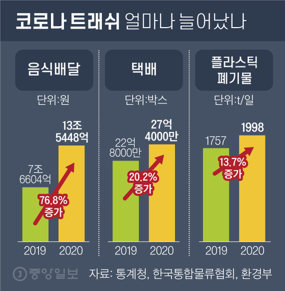
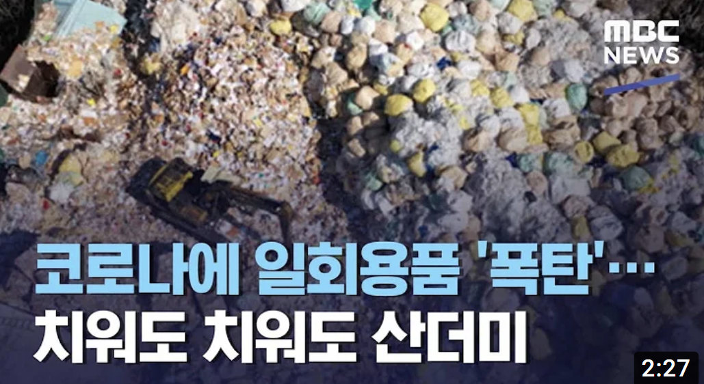

<!DOCTYPE html>
<html lang="ko">
<head>
  <meta charset="UTF-8">
  <title>blog6</title>
  <link rel="stylesheet" href="css/blog-2500.css">
</head>
</html>
<body>
  <div id="base">
    <div class="header">
      <h1>감당할 수 없을 정도로 늘어난 쓰레기들 어떻게 처리해야 할까</h1>
      <p style="color: rgb(153, 153, 153)">2021.12.06</p>
    </div>
    <hr>

    <div class="content">
      <p> 코로나19의 유행으로 사람들은 코로나 이전보다 훨씬 많이 배달음식을 시키고, 온라인 쇼핑몰에서 택배를 시키고 있다. 
        택배를 많이 시키면 자연스럽게 박스와 포장지가 엄청나게 나오고 이는 전부 버려진다. 
        게다가 음식을 배달 받아봤다면 알겠지만 포장이 한두가지가 아니다. 가장 겉에 있는 봉지, 소스를 담은 통, 반찬통, 국물을 담는 통, 
        밥이나 면을 탐는 통... 재료 하나하나를 다 따로 포장해야 하기 때문에 포장 용기가 정말 많이 필요하다.
      </p>

      
      <span style="font-size: 13px; padding-top:5px; color: rgb(129, 128, 128)">코로나19 유행 이후 늘어난 쓰레기 통계</span>

      <p>쓰레기가 너무 많이 나와서 문제라는 것을 느끼면서도 어차피 대부분은 재활용 쓰레기로 분리수거 되기 때문에 그렇게 큰 
        문제는 아니라고 생각할 수도 있다. 하지만 내가 분리수거를 잘 한다고 해서 모든 쓰레기들이 잘 처리가 되는 것은 아니다.
      </p>
      <p>현재 버려지고 있는 쓰레기의 양은 현재 상황에서 처리 가능한 쓰레기 양의 한계치를 넘어버렸다. 재활용 쓰레기 처리 업체에
         근무하는 사람들은 매일 초과근무를 하며 쓰레기를 분류하고 있다. 게다가 사람들이 제대로 분류하지 않고 혼합 쓰레기를 그냥 
         재활용 쓰레기로 버린다거나 이물질이 묻은 채로 그냥 버리는 것도 문제가 된다. 
        </p>
        <p>이렇게 되면 재활용 쓰레기라도 재활용하지 못하고 그냥 버러야 한다. 더욱 큰 문제는 이렇게 분류해서 모은 재활용 쓰레기를 
          사가는 데가 없어 처리할 수가 없다는 것이다. 그래서 재활용 처리 업체 사장님들은 계속 밀려오는 처리 불가능한 쓰레기들과 
          초과 근무로 인해 늘어난 인건비로 인해 계속되는 적자를 겪고 있다고 호소한다.
      </p>

      <p>이런 문제 상황 속에서 우리가 실천할 수 있는 것은 일회용품 사용을 줄이는 것이다. 일회용품을 줄이기 위해서는 
        택배를 시키기 보다는 직접 사는 것이, 음식을 배달시켜 먹는 것 보다는 직접 가서 먹는 것이 좋다. 하지만 코로나 상황 속에서
       이런 것들을 실천하는 것은 쉽지 않다.</p>
      
      <p>그래도 우리가 살고 있는 지구를 위해 조금씩이라도 쓰레기를 줄이고 잘 분리수거 하는 것에 동참해야 하지 않을까?</p>
      
      <a href="https://www.youtube.com/watch?v=DPq6LtALdmk" target="_blank"></a>
    </div>
    
    <div id="lightbox">
      
    </div>

    <div class="footer">

    </div>

  </div>


  <script src="lightbox.js"></script>
</body>